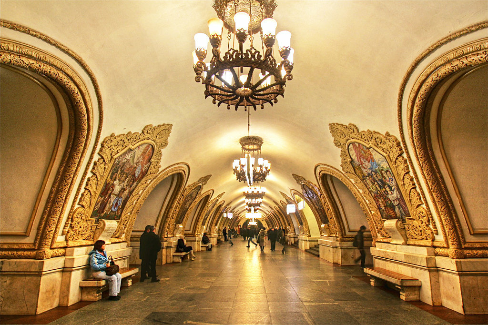
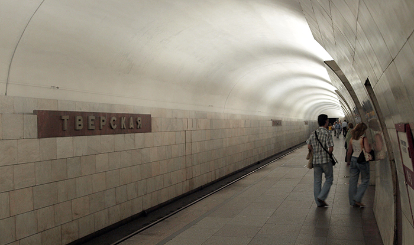
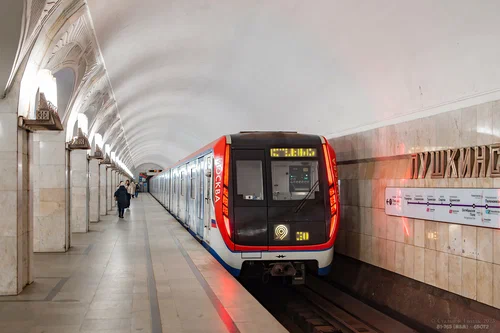
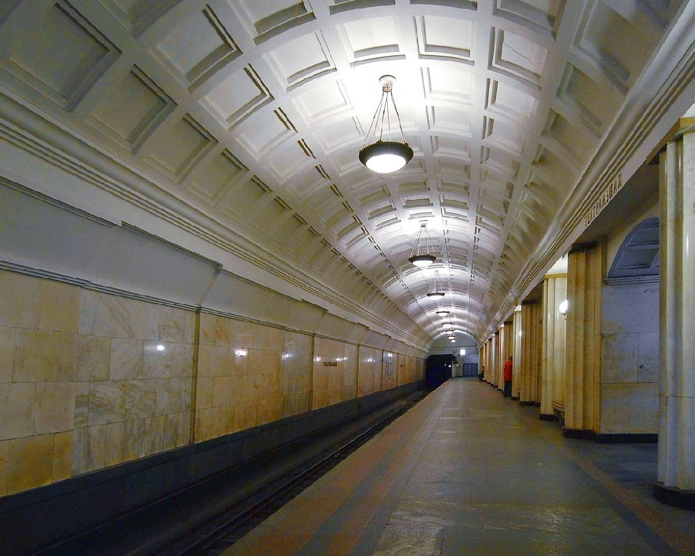
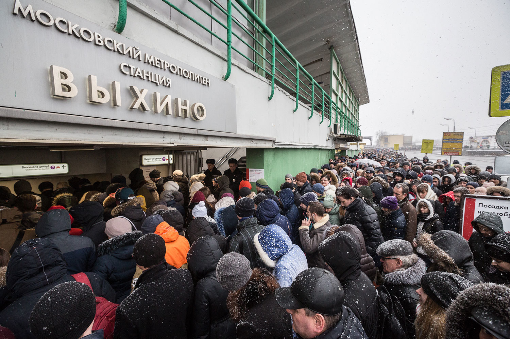

- Ф.И.О.: Ситало Роман Валерьевич
- Дата рождения: 03.09.2002
- Город: Москва
|
- Телефон: +7-999-123-45-67
- E-mail: sitalorv@example.com
- Telegram: @sitalorv
|





| № |
Станция |
| 1 |
Киевская |
| 2 |
Тверская |
| 3 |
Пушкинская |
| 4 |
Театральная |
| 5 |
Выхино |
|